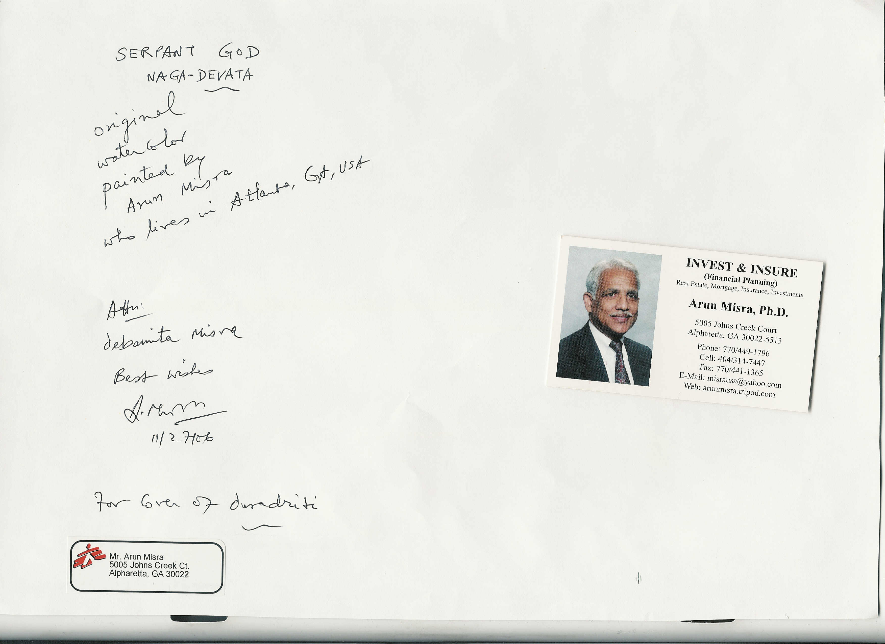
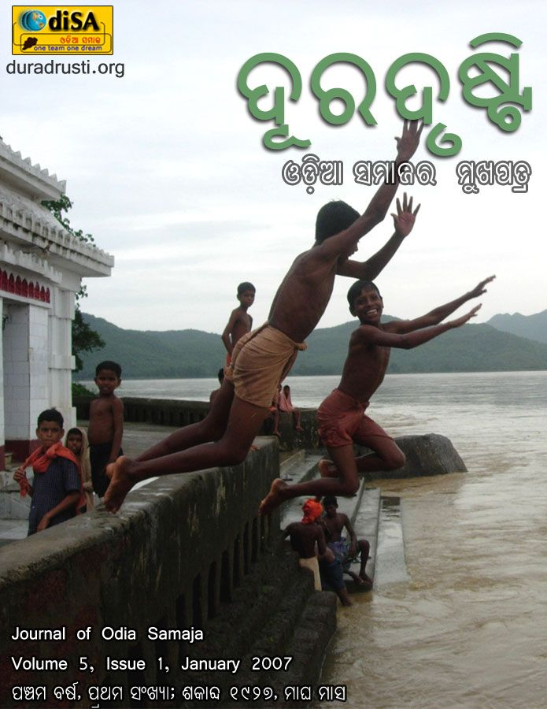
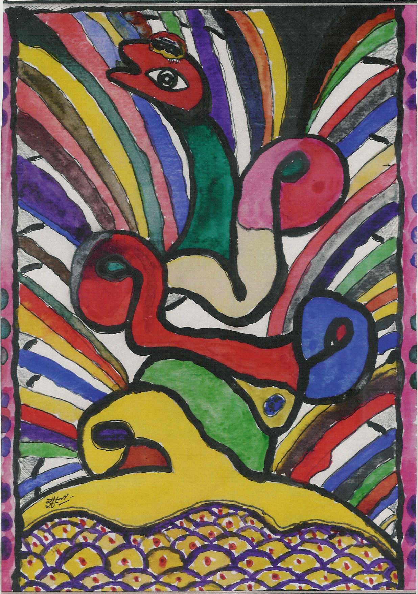
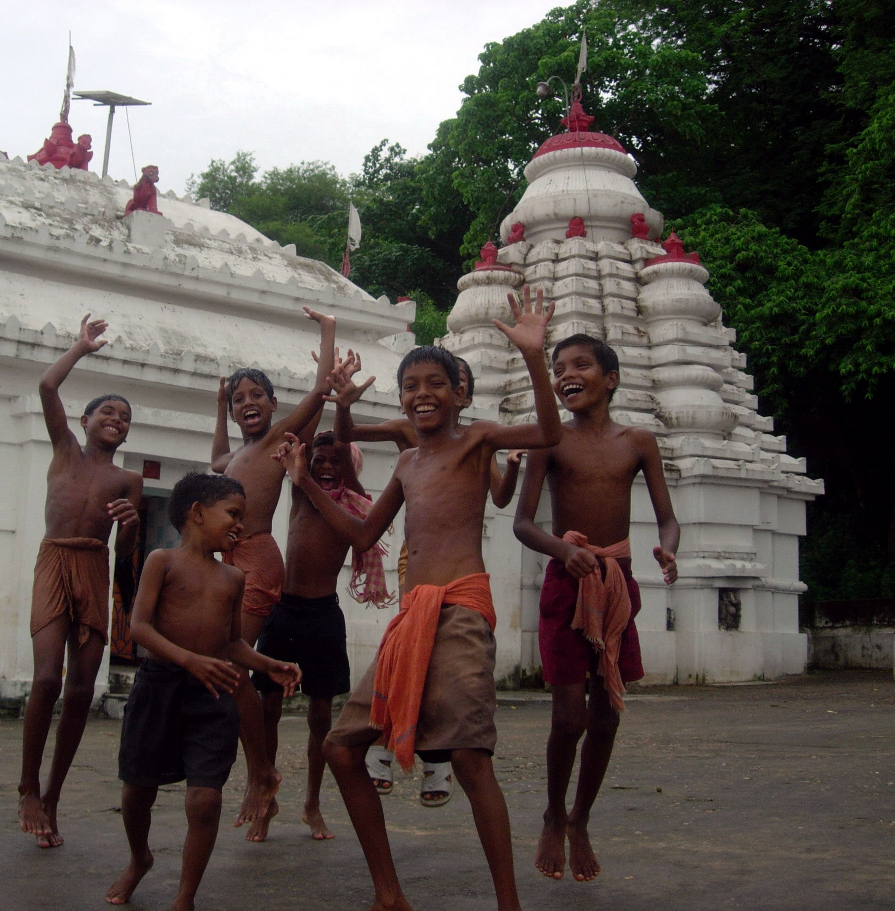
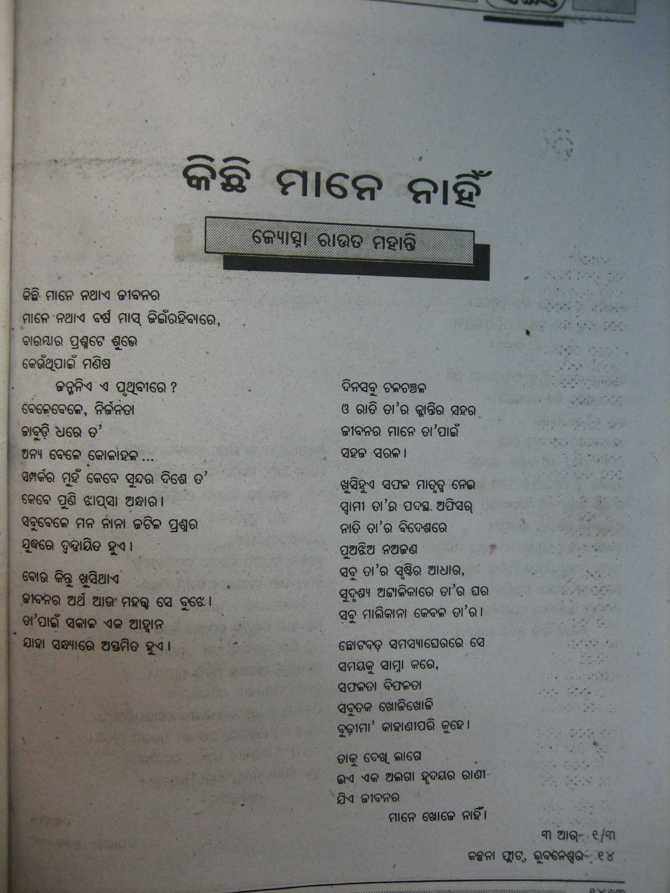
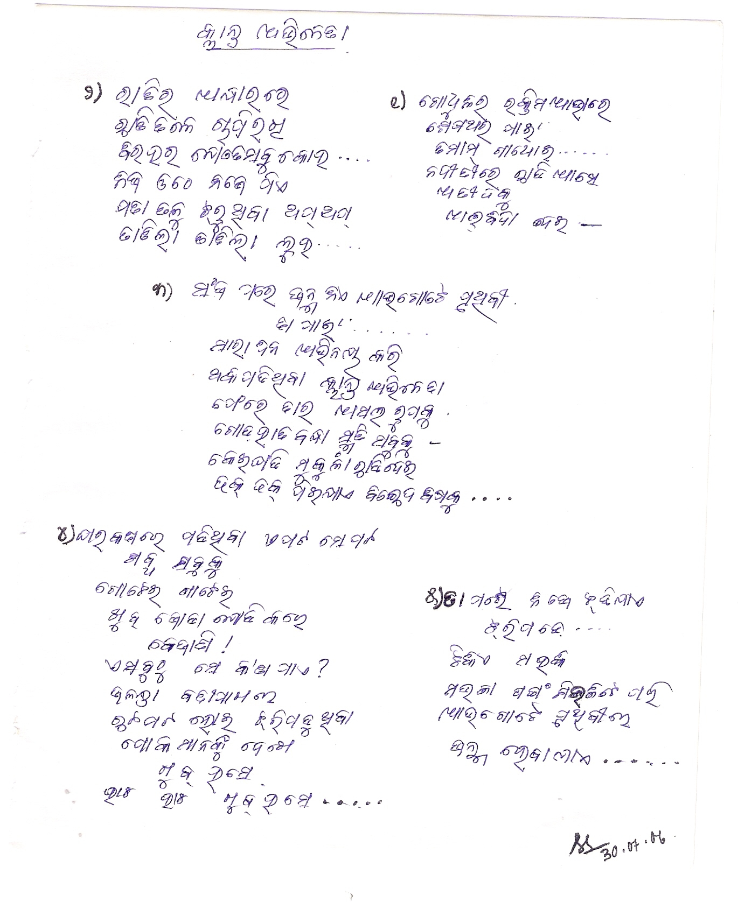
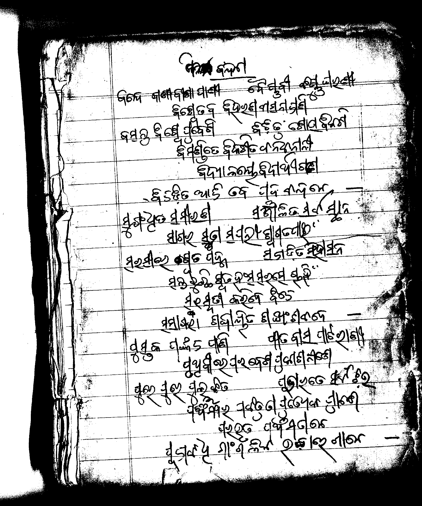
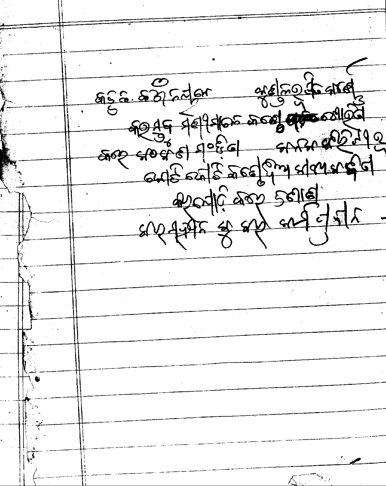

January 2007 · production files
Recovered from dd5-1.zip in the supplied OdiyaOrgNew backup. These are submissions, editorial variants and cover options, distinct from the published issue. File and folder names are preserved; they do not establish revision order or publication status.
Published issue reader · Recovery notes
Historical readings
- Editorial · saved reviewed variant
- Paradigm Shift of OdiSA · saved report
- Editorial · saved old-original variant
PDF readings
- drushya-kAbya-bm.pdf · 8 pages
- bhaskar_1.pdf · 1 pages
- bunu_kabita.pdf · 1 pages
- Gushan_kumar_nibedita.pdf · 8 pages
Original attachments
Word and RTF originals are downloads only. Some .doc filenames actually contain RTF. Many documents require legacy Odia fonts; use the published issue or PDF readings where available. No online editor is provided.
- archive/aara-paari-ra-parba-abhiraam.rtf · RTF
- archive/ahalya-bm.rtf · RTF
- archive/ce-message-bj-revwd-mp.doc · RTF
- archive/dd5-1-editorial-mp-revwd-bm.doc · Word binary
- archive/dream-am.doc · Word binary
- archive/drushya-kAbya-bm.pdf · PDF
- archive/god-vs-science-am.doc · Word binary
- archive/jibanata-jahni-phula-by-girija-sir.rtf · RTF
- archive/kallaa-syaahi-skb-part-1.doc · Word binary
- archive/kallaa-syaahi-skb-part-2.doc · RTF
- archive/kallaa-syaahi-skb-part-3.doc · RTF
- archive/kichhi-maane-naahin-by-jyostna-rout-mohanty.rtf · RTF
- archive/kllaanta-abhinetaa-ss.doc · RTF
- archive/last-six-months-oriya-news-slm.doc · Word binary
- archive/manmohan-mishra-sd.doc · Word binary
- archive/nibedita-ss-revwd-bk.doc · RTF
- archive/nija-desha-taara-sb.doc · RTF
- archive/orissa-throttled-etc-sp.doc · Word binary
- archive/orphans-of-orissa-sm.doc · Word binary
- archive/paradigm-shift-of-odia-samaja-bj.doc · Word binary
- archive/saraswati-bandana-knp.rtf · RTF
- archive/upjiibya-mp.rtf · RTF
- front-cover-pictures/dd5_1.doc · Word binary
- front-cover-pictures/dd5-1-v1.pdf · exact copy of an already preserved PDF
- old-original/bhaskar_1.pdf · PDF
- old-original/bunu_kabita.pdf · PDF
- old-original/CEmessage.rtf · RTF
- old-original/CEMessageJan07.doc · Word binary
- old-original/Duradrusti-Editorial Jan2007.doc · Word binary
- old-original/Gushan_kumar_nibedita.pdf · PDF
- old-original/nibeditta-by-shridhar-sahoo.rtf · RTF
- old-original/pAgeli.rtf · RTF
Cover options and submitted artwork
Original saved images, including duplicated copies in different production folders. These are not all published covers.










